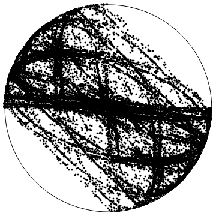

Teoremas clássicos da Teoria das Probabilidades como a Lei dos Grandes Números, o Teorema do Limite Central ou a Lei de Grandes Desvios, podem ser reformulados no âmbito da Teoria Ergódica para produtos aleatórios de matrizes, isto é para processos estocásticos I.I.D. com valores num grupo de matrizes. O expoente de Lyapunov (máximo), que mede a taxa de crescimento das normas dos produtos de matrizes, corresponde aqui ao valor médio do processo na teoria clássica.
Neste minicurso faremos uma breve introdução a esta teoria, desenvolvida por H. Furstenberg et al., demonstrando as referidas propriedades estatísticas e explicando as suas implicações, via expoentes de Lyapunov, na Teoria dos Sistemas Dinâmicos.

Pré-requisitos
Teoria da medida, teoria das probabilidades, teoria ergódica.
Bibliografia:
Krerley Oliveira e Marcelo Viana, Fundamentos da Teoria Ergódica, editora SBM.
Pedro Duarte e Silvius Klein, Continuity of the Lyapunov Exponents of Linear Cocycles, editora IMPA, arquivo disponível aqui.
Informações práticas
Professor: Pedro Duarte (Universidade de Lisboa)
Datas: 29, 30 e 31 de janeiro
Horário: das 10h às 12h
Local: L214 edifício Leme, PUC-Rio.
Bibliografia
Notas de aula disponíveis aqui.
Marcelo Viana, Lectures on Lyapunov Exponents, Cambridge University Press.
Alex Furman, Random walks on groups and random transformations, arquivo disponível aqui.